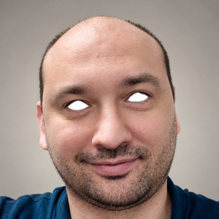
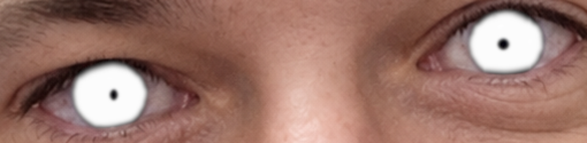
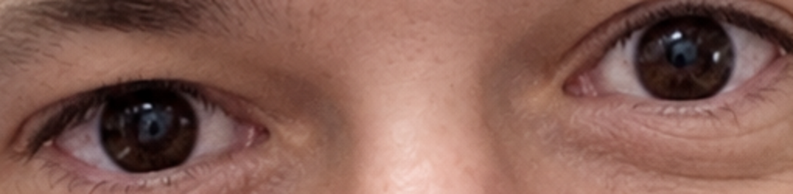
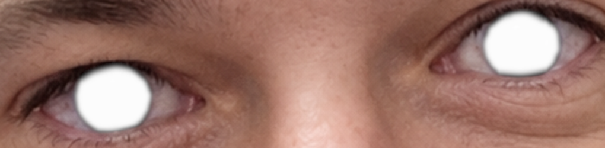
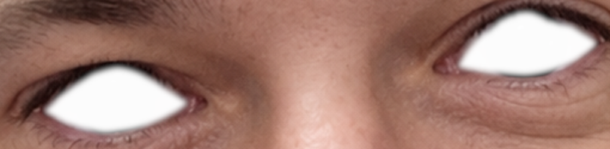

A - Iris only

The brown iris glows white; the pupil stays dark and the whites stay unchanged.
SDR simulations, visible on an ordinary monitor. Same bright-white treatment in three different regions, using refined high-resolution contours and antialiased, feathered edges. These show placement and blending, not actual HDR luminance. No new HDR version has been applied yet.
The brown iris glows white; the pupil stays dark and the whites stay unchanged.
The iris and pupil form one luminous white area; the whites stay unchanged.

The entire visible eye glows white, including the iris, pupil, and whites, bounded by the eyelids.




Contour inspection · Existing actual HDR version (unchanged)